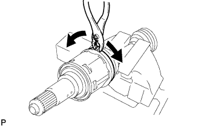
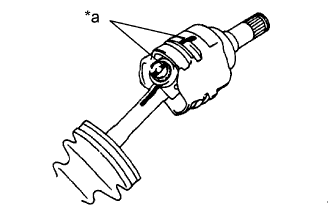
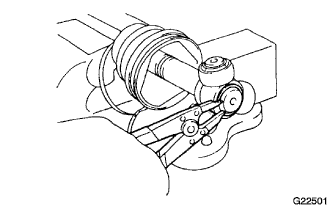
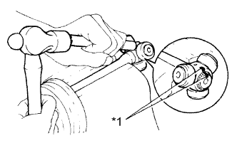
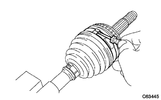
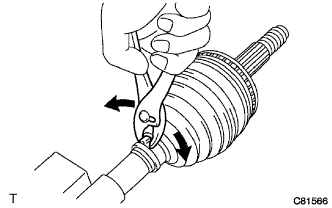
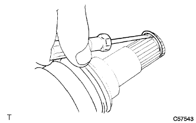
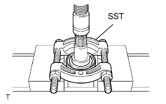
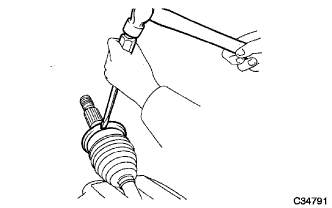

ПЕРЕДНИЙ ПРИВОДНОЙ ВАЛ В СБОРЕ > РАЗБОРКА |
| 1. СНИМИТЕ ХОМУТ ЧЕХЛА ВНУТРЕННЕГО ШАРНИРА ПЕРЕДНЕЙ ПОЛУОСИ № 2 |
Не затягивая, зажмите приводной вал в тисках между алюминиевыми пластинами.
|  |
С помощью плоскогубцев снимите хомут чехла внутреннего шарнира передней полуоси № 2, как показано на рисунке.
| 2. СНИМИТЕ ХОМУТ ЧЕХЛА ВНУТРЕННЕГО ШАРНИРА ПЕРЕДНЕЙ ПОЛУОСИ № 1 |
Снимите хомут чехла внутреннего шарнира передней полуоси.
| 3. СНИМИТЕ ЧЕХОЛ ВНУТРЕННЕГО ШАРНИРА ПЕРЕДНЕЙ ПОЛУОСИ |
| 4. СНИМИТЕ ВНУТРЕННИЙ ШАРНИР ПЕРЕДНЕЙ ПОЛУОСИ В СБОРЕ |
|  |
Нанесите метки на триподное соединение и валы внутреннего и наружного шарниров.
| *a | Метка |
Снимите внутренний шарнир с вала наружного шарнира.
|  |
С помощью съемника стопорных колец снимите пружинное стопорное кольцо.
|  |
Нанесите метки на вал наружного шарнира и триподное соединение.
| *a | Метка |
С помощью латунного стержня и молотка снимите триподное соединение с приводного вала.
| 5. СНИМИТЕ ХОМУТ ЧЕХЛА НАРУЖНОГО ШАРНИРА ПЕРЕДНЕЙ ПОЛУОСИ № 2 |
|  |
С помощью отвертки снимите хомуты чехла наружного шарнира.
| 6. СНИМИТЕ ХОМУТ ЧЕХЛА НАРУЖНОГО ШАРНИРА ПЕРЕДНЕЙ ПОЛУОСИ № 1 |
|  |
Плоскогубцами снимите зажим чехла, как показано на рисунке.
| 7. СНИМИТЕ ЧЕХОЛ НАРУЖНОГО ШАРНИРА |
| 8. СНИМИТЕ ПРУЖИННОЕ СТОПОРНОЕ КОЛЬЦО ВАЛА |
|  |
С помощью отвертки снимите пружинное стопорное кольцо.
| 9. СНИМИТЕ ПЫЛЬНИК ПЕРЕДНЕГО ПРИВОДНОГО ВАЛА |
|  |
Снимите пыльник с помощью SST и пресса.
| 10. СНИМИТЕ ПЫЛЕЗАЩИТНОЕ УПЛОТНЕНИЕ СТУПИЦЫ ПЕРЕДНЕГО КОЛЕСА |
|  |
С помощью отвертки и молотка снимите пылезащитное уплотнение.